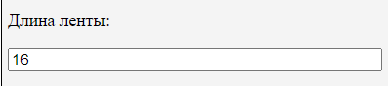
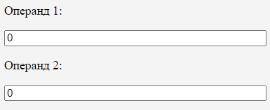
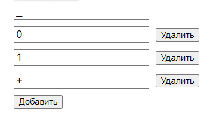
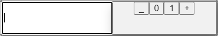

С помощью ленты можно задать операнды. На ленте происходит выполнение алгоритма, если выбран стандартный или пошаговый режим.
В окне алфавита можно вводить символы, изменять существующие, а также сохранять и загружать алфавиты
Изменения отобразятся в таблице алгоритма.
Таблица алгоритма является средством ввода команд.
Столбцы содержат состояния машины Тьюринга, регулировать которые можно посредством кнопок "left", "right" и "delete", располагающихся под названием состояния.
Строки содержат символы алфавита и автоматически изменяются при изменении алфавита.
Окно настрооек позволяет изменять длину ленты, вводить операнды в числовом виде, выбирать режим выполнения алгоритма и собственно запускать алгоритм.
Длина ленты редактируется в окне настроек в поле "Длина ленты". Минимальное значение ленты - 10, максимальное - 200. При нарушении границ длины, лента установится размером в соответствующее ограничение. Чтобы подтвердить изменения ленты необходимо нажать ЛКМ вне поля ввода длины ленты.
Во-первых, операнды можно установить непосредственно на ленте. Для этого необходимо нажать левой кнопкой мыши по ячейке и выбрать символ. Символы представлены из списка символов алфавита.
Во-вторых, операнды можно задать в числовом виде с помощтю окна настроек. При таком варианте первый операнд установится начиная с позиции 3, затем будет свободная ячейка для ввода знака, а далее будет расположен второй операнд.
При нажатии на кнопку "Алфавит" откроется панель для работы с алфавитом. По умолчанию установлены символы "_", "*", "+". Чтобы добавить символ необходимо нажать кнопку "Добавить". Чтобы изменить символ необходимо выбрать ячейку, значение которого хотите изменить, затем поменять значение на нужный символ. Удаление символов происходит по нажатию кнопки "Удалить" напротив соответвущей ячейки символа.
Нажатие по кнопке "Сохранить" сохраняет текущий алфавит в базе данных, если такой ещё не содержится.
Чтобы загрузить алфавит нужно нажать на кнопку "Загрузить". Затем откроется модальное окно, в котором можно выбрать алфавит для загрузки.
Таблица алгоритма нужна для ввода команд машины Тьюринга
Чтобы ввести команду необходимо выбрать ячейку, в которую команда будет помещена. Система отобразит список символов алфавита, после выбора символа, далее система покажет список символов перехода каретки, после выбора отобразится заключительный список, содержащий состояния, в которое надо перейти.
Нажатие по кнопке "Сохранить" сохраняет текущий адгоритм в базе данных.
Чтобы загрузить алгоритм нужно нажать на кнопку "Загрузить". Затем откроется модальное окно, в котором можно выбрать алгоритм для загрузки.
